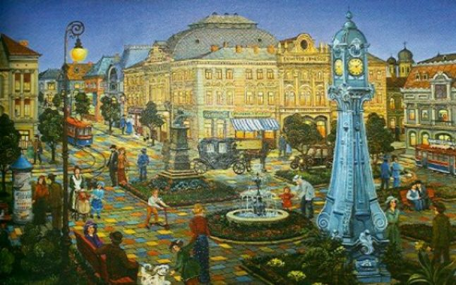
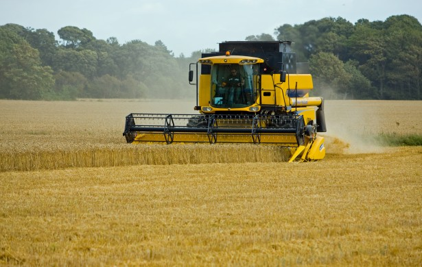

Brăila The county beside the Danube River
The city
Brăila is a city in eastern Romania, a port on the Danube and the capital of Brăila County. According to the 2011 Romanian census there were 180,302 people living within the city of Brăila,making it the 11th most populous city in Romania. Streets radiating from near the port towards Brăila's center are crossed at symmetrical intervals by concentric streets following the geometric design of the old Ottoman fortifications.
History
Before 14th century, a small village existed in the place of today's Brăila, probably inhabited by fishermen and small merchants.The village fell to the Mongols during the 1241. The first certain document mentioning Brăila is a privilege act, given by Vladislav I of Wallachia to German merchants of Brașov, who were exempt of customs duties when they followed the road from Brașov to the Danube. Around 1540, the city became a part of the Ottoman Empire. The town was part of the Empire's northern defensive network and the Ottomans built a stone stronghold in the town.The Ottomans called it Ibrail or Ibraila. During the 19th century, the port became one of the three most important ports on the Danube. The city's greatest period of prosperity was at the end of the 19th century and in the early 20th century, when it was an important port for most of the merchandise coming in and going out of Romania. During World War II, Brăila was captured in 1944 by Soviet troops. After the 1989 Revolution, Brăila entered a period of economic decline.
Personalities
Ana Aslanthe doctor who has deciphered the secret of youth without old age
"To be eternally young does not mean to be 20 years old, it means to be optimistic, to feel good, to have an ideal in life to fight for and to conquer"
Ana Aslan was a Romanian biologist and physician, borned in Brăila, who discovered the anti-aging effects of procaine, based on the drugs Gerovital H3 and Aslavital, which she developed. She is considered to be a pioneer of gerontology and geriatrics. In 1952, she founded the Geriatric Institute of Bucharest. This institute was the first of its kind in the world and was recognized by the World Health Organization. Although her work was controversial, it received international attention.
Economy
Accessible to small and medium-sized oceangoing ships, Brăila has large grain-handling and warehousing facilities. It is also an important industrial center, with metalworking, textile, food-processing, and other factories. The main economic branch is agriculture.In Braila there is the largest compact agriculture farm of Europe mesuring over 60,000 ha. As well, Braila is knowen for it shipyard VARD.
Sport
The sport is represented by the handball team HC Dunarea and the Dacia Unirea football team. In the 2016-2017 season of the national handball competition, HC Dunarea was the national vice-champion, history of the club beeing for decades.